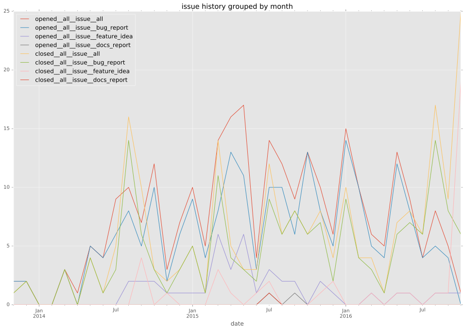

authors
- cove
- joshuaconner
- softzilla
- ThomasSteinbach
- zfil
- dusdanig
maintainers
contributors
- smashwilson : 148 commits
- abadger : 122 commits
- cove : 98 commits
- joshuaconner : 52 commits
- mlosev : 14 commits
- bcoca : 11 commits
- softzilla : 10 commits
- ryanwalls : 9 commits
- leonty : 8 commits
- jquadrin : 8 commits
- jimi-c : 8 commits
- daviddyball : 8 commits
- SamYaple : 8 commits
- steveeJ : 7 commits
- mattjbray : 7 commits
- dkerwin : 7 commits
- dddpaul : 7 commits
- AndrewPashkin : 7 commits
- nemunaire : 6 commits
- gesellix : 6 commits
- bobrik : 6 commits
- larsks : 5 commits
- awasilyev : 5 commits
- tpaz : 4 commits
- simono : 4 commits
- omarkhan : 4 commits
- mscherer : 4 commits
- jhaals : 4 commits
- gottwald : 4 commits
- PikachuEXE : 4 commits
- pborreli : 3 commits
- mantiz : 3 commits
- justnom : 3 commits
- discordianfish : 3 commits
- chouseknecht : 3 commits
- wrouesnel : 2 commits
- pmyjavec : 2 commits
- mtpereira : 2 commits
- mpdehaan : 2 commits
- kaczynskid : 2 commits
- jmoretti : 2 commits
- jctanner : 2 commits
- Yannig : 2 commits
- ThomasSteinbach : 2 commits
- weitzj : 1 commits
- schlueter : 1 commits
- rtnpro : 1 commits
- qiluo-msft : 1 commits
- omriiluz : 1 commits
- moncho : 1 commits
- lorin : 1 commits
- hutchic : 1 commits
- fabianvf : 1 commits
- berlic : 1 commits
- awesomefireduck : 1 commits
- Igelko : 1 commits
total issue counts
unknown: 2
feature pull request: 50
docs report: 1
pullrequest: 228
docs pull request: 13
bugfix pull request: 146
feature idea: 19
issue: 91
new plugin: 15
bug report: 73
issue history

pullrequest history

days open by issue type
bugfix pull request
count: 221
std: 39.1496075706
min: 0
max: 297
median: 0.0
mean: 13.9095022624
all
count: 412
std: 100.595902201
min: 0
max: 707
median: 0.0
mean: 39.6699029126
pullrequest
count: 0
std: nan
min: nan
max: nan
median: nan
mean: nan
docs pull request
count: 22
std: 25.1239783019
min: 0
max: 99
median: 0.0
mean: 11.5
docs report
count: 0
std: nan
min: nan
max: nan
median: nan
mean: nan
feature pull request
count: 72
std: 66.5778854264
min: 0
max: 331
median: 18.0
mean: 45.4305555556
feature idea
count: 17
std: 226.150977681
min: 0
max: 707
median: 455.0
mean: 388.470588235
issue
count: 0
std: nan
min: nan
max: nan
median: nan
mean: nan
new plugin
count: 20
std: 69.5453468117
min: 0
max: 201
median: 37.0
mean: 58.35
bug report
count: 58
std: 76.8971567503
min: 0
max: 378
median: 2.0
mean: 34.0517241379
closures grouped by total days open